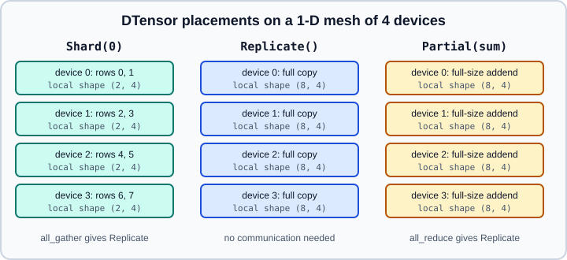

DTensor, Tensor & Pipeline Parallelism
|
This content was generated with the assistance of AI and should be verified against the official documentation before being relied on in production. |
DistributedDataParallel and FSDP2 split the data (and, for FSDP2, the parameter storage) across processes, but every layer is still computed in full on every rank. When one layer no longer fits, or when you want to spread a very deep model over several machines, you need to split the computation itself. PyTorch provides three building blocks for that: DTensor, a tensor type that knows how it is laid out across devices, tensor parallelism (TP) built on it, and pipeline parallelism (PP) in torch.distributed.pipelining. The general ideas (data, tensor, pipeline and sequence parallelism, communication cost) are in Distributed Training; this page covers the PyTorch APIs.
All of the examples need a multi-process launch (torchrun, see Distributed Overview) and, in practice, several GPUs. They were run on Python 3.13 with PyTorch 2.15 on 2026-10-31 as CPU processes with the Gloo back end (8 processes for the 2-D mesh, 4 for the DTensor and tensor-parallel examples, 3 and 2 for the pipeline examples), with "cuda" replaced by "cpu" and "nccl" by "gloo". The documentation labels torch.distributed.tensor and torch.distributed.tensor.parallel as alpha or experimental, and torch.distributed.pipelining as alpha, so signatures can change between releases.
DeviceMesh
A DeviceMesh is an n-dimensional array of ranks together with the communicators for each of its dimensions. A 1-D mesh over eight GPUs is a plain process group; a 2-D mesh of shape (2, 4) names two groups of four ranks and four groups of two. Meshes are created with init_device_mesh, and dimensions can be named so that a sub-mesh can be selected by name:
from torch.distributed.device_mesh import init_device_mesh
# 8 GPUs: 2 data-parallel replicas x 4 tensor-parallel shards
mesh = init_device_mesh("cuda", (2, 4), mesh_dim_names=("dp", "tp"))
dp_mesh = mesh["dp"] # 1-D sub-mesh used by FSDP2 / DDP
tp_mesh = mesh["tp"] # 1-D sub-mesh used by tensor parallelisminit_device_mesh must be called on every rank of a job started by torchrun. The sub-mesh indexing mesh["tp"] is how every API below receives a one-dimensional mesh.
DTensor
DTensor (torch.distributed.tensor) is a torch.Tensor subclass that represents one logical tensor whose storage is spread over a mesh. Each rank holds a local piece. A placement per mesh dimension says how the logical tensor maps to the local pieces:
-
Shard(dim): the tensor is split along tensor dimensiondim(usingtorch.chunksemantics) across that mesh dimension. -
Replicate(): every rank on that mesh dimension holds a full copy. -
Partial(reduce_op): every rank holds a full-size value that still has to be reduced (for example"sum","avg"or"max") to obtain the logical value. This is what a matrix product leaves behind when its contracted dimension was sharded.

Operators on DTensors are overridden: each op looks up a sharding rule, runs the local computation on the local pieces, and inserts the collectives it needs. The result is another DTensor with derived placements. The result of a @ b where a is Shard(0) and b is Replicate() stays Shard(0) and needs no communication; if the contracted dimension is sharded the result is Partial.
Creating DTensors
# torchrun --nproc-per-node 4 dtensor_demo.py
import torch
from torch.distributed.device_mesh import init_device_mesh
from torch.distributed.tensor import DTensor, Partial, Replicate, Shard, distribute_tensor
mesh = init_device_mesh("cuda", (4,))
big = torch.randn(8, 16)
dt = distribute_tensor(big, mesh, [Shard(0)]) # rank 0 is the source of truth
print(dt.placements) # (Shard(dim=0),)
print(dt.to_local().shape) # torch.Size([2, 16]) on every rank
local = torch.ones(8, 16, device="cuda")
pending = DTensor.from_local(local, mesh, [Partial("sum")])
z = torch.distributed.tensor.zeros(8, 16, device_mesh=mesh, placements=[Shard(0)])-
distribute_tensor(tensor, device_mesh, placements, src_data_rank=0)takes a global tensor (typically a parameter) and shards or replicates it. By default rank 0 of each mesh dimension is the source of the data. -
DTensor.from_local(local_tensor, device_mesh, placements, run_check=False, ...)wraps a tensor that each rank already computed (typically an activation). Withrun_check=Falseyou are responsible for the pieces being consistent with the stated placements. -
The factory functions
zeros,ones,empty,full,randandrandnintorch.distributed.tensorcreate the sharded tensor directly, without materialising the full one first.
Converting between layouts
redistribute changes the placements and issues the matching collective. full_tensor() gathers everything into a plain tensor on every rank, and to_local() returns the local piece without communication.
| From | To | Communication |
|---|---|---|
|
|
all-gather |
|
|
all-to-all |
|
|
local slicing, none |
|
|
all-reduce |
|
|
reduce-scatter |
replicated = dt.redistribute(mesh, [Replicate()]) # all-gather
reduced = pending.redistribute(mesh, [Replicate()]) # all-reduce
full = dt.full_tensor() # plain torch.Tensor, shape (8, 16)
piece = dt.to_local() # this rank's slice, no communicationredistribute and to_local are differentiable, and redistribute works only inside one DeviceMesh. to_local() may return an asynchronous collective result that is waited on automatically when it is used.
Rules and pitfalls
-
Do not mix tensors and DTensors. If any operand of an operator is a DTensor, all tensor operands must be DTensors. Wrap plain tensors explicitly with
DTensor.from_local(t, mesh, [Replicate()]). The context managertorch.distributed.tensor.experimental.implicit_replication()treats plain tensors as replicated, but the documentation warns that it silently produces wrong results if they are not actually identical on every rank. -
Random numbers. Sharded DTensors receive different random values per shard and replicated ones identical values, but only if every rank starts from the same generator state. Call
torch.manual_seedwith the same seed on all ranks. Under pipeline parallelism ranks in the same stage share a seed and different stages use different seeds. The DTensor RNG does not support CPU yet. -
Uneven shards (a dimension not divisible by the mesh size) follow
torch.chunkand are documented as experimental for some operators. -
Debugging.
CommDebugModecounts the collectives issued in a region, andvisualize_shardingprints the layout of a 1-D or 2-D DTensor (it needstabulate, orrichandmatplotlib). SettingTORCH_LOGS=+dtensorlogs sharding propagation.
from torch.distributed.tensor.debug import CommDebugMode, visualize_sharding
comm_mode = CommDebugMode()
with comm_mode:
out = dt.redistribute(mesh, [Replicate()])
print(comm_mode.get_comm_counts()) # which functional collectives ran
visualize_sharding(dt, header="weight")Sharding a whole module
distribute_module(module, device_mesh, partition_fn, input_fn, output_fn) converts a module’s parameters with a user function and installs hooks that convert its inputs and outputs. Parameters left untouched by partition_fn become replicated DTensors.
import torch
import torch.nn as nn
from torch.distributed.device_mesh import init_device_mesh
from torch.distributed.tensor import DTensor, Replicate, Shard, distribute_module, distribute_tensor
mesh = init_device_mesh("cuda", (4,))
def shard_params(name, mod, device_mesh):
if isinstance(mod, nn.Linear):
for pname, param in mod.named_parameters(recurse=False):
mod.register_parameter(
pname, nn.Parameter(distribute_tensor(param, device_mesh, [Shard(0)]))
)
def replicate_inputs(mod, inputs, device_mesh):
return tuple(
DTensor.from_local(x, device_mesh, [Replicate()]) if isinstance(x, torch.Tensor) else x
for x in inputs
)
def gather_output(mod, outputs, device_mesh):
return outputs.full_tensor() if isinstance(outputs, DTensor) else outputs
model = nn.Sequential(nn.Linear(16, 16)).to("cuda")
sharded = distribute_module(
model, mesh,
partition_fn=shard_params,
input_fn=replicate_inputs,
output_fn=gather_output,
)The older two-argument forms of input_fn and output_fn are deprecated in favour of the three-argument form shown. distribute_module is the low-level tool; for transformers the ready-made styles in the next section cover almost every case.
Tensor parallelism
Tensor parallelism splits individual weight matrices over the ranks of one mesh dimension so that each rank computes a slice of every layer. It is most efficient inside one node, where the per-layer communication travels over NVLink rather than the network. The torch.distributed.tensor.parallel API rewrites a module in place: you give parallelize_module a mesh and a plan that maps module names to parallel styles.
The column/row pairing
For a two-layer MLP \( y = W_2\,\sigma(W_1 x) \), shard \( W_1 \) by columns and \( W_2 \) by rows. Each rank then computes its slice of the hidden activations independently, applies the elementwise activation locally, multiplies by its row-slice of \( W_2 \), and a single all-reduce (or reduce-scatter, with sequence parallelism) sums the partial outputs. Attention follows the same pattern: shard the query, key and value projections by columns (that is, by heads) and the output projection by rows.
| Style | Behaviour |
|---|---|
|
Shards an |
|
Shards by rows. Default input is sharded on the last dimension, default output is replicated (an all-reduce). |
|
Replicates the parameters of |
|
Do not shard parameters. They reinterpret a module’s inputs or outputs as DTensors with given layouts and redistribute them to the desired layouts. |
import torch.nn as nn
from torch.distributed.device_mesh import init_device_mesh
from torch.distributed.tensor import Replicate, Shard
from torch.distributed.tensor.parallel import (
ColwiseParallel, PrepareModuleInput, RowwiseParallel, SequenceParallel,
parallelize_module,
)
class FeedForward(nn.Module):
def __init__(self, dim: int, hidden: int) -> None:
super().__init__()
self.w1 = nn.Linear(dim, hidden)
self.w2 = nn.Linear(hidden, dim)
self.act = nn.GELU()
def forward(self, x):
return self.w2(self.act(self.w1(x)))
class Block(nn.Module):
def __init__(self, dim: int = 1024, hidden: int = 4096) -> None:
super().__init__()
self.norm = nn.LayerNorm(dim)
self.mlp = FeedForward(dim, hidden)
def forward(self, x):
return x + self.mlp(self.norm(x))
mesh = init_device_mesh("cuda", (4,), mesh_dim_names=("tp",))
block = Block().cuda()
plan = {
"norm": SequenceParallel(),
"mlp": PrepareModuleInput(
input_layouts=(Shard(1),), # sequence-sharded activations arrive...
desired_input_layouts=(Replicate(),), # ...and are all-gathered for the MLP
),
"mlp.w1": ColwiseParallel(),
"mlp.w2": RowwiseParallel(output_layouts=Shard(1)), # reduce-scatter back to sequence shards
}
block = parallelize_module(block, mesh["tp"], plan)Source: https://docs.pytorch.org/docs/stable/distributed.tensor.parallel.html and https://docs.pytorch.org/tutorials/intermediate/TP_tutorial.html
Points to watch:
-
parallelize_module(module, device_mesh, parallelize_plan, src_data_rank=0)accepts only a 1-D mesh. When you have a(dp, tp)mesh, passmesh["tp"]. -
The plan is a dictionary from fully qualified module names to styles (or a single style applied to the module). Keep the plan in step with the model definition, because the names are matched against the module tree.
-
With
use_local_output=True(the default for the Colwise and Rowwise styles) the module returns a plain tensor, which keeps the rest of the model unchanged. Set it toFalseto keep DTensors flowing between layers. -
The sequence-parallel layers assume ones-initialised weights; if you use a custom initialisation broadcast it so it is replicated.
-
Heads and hidden sizes must be divisible by the TP degree. Choose the degree to match the model, not the other way round.
Loss parallelism
With a vocabulary-sized output layer the logits are very large. If the last projection is column-sharded, the logits are sharded on the class dimension, and gathering them just to compute a cross-entropy would waste memory. The loss_parallel context manager computes the loss on the sharded logits:
import torch
import torch.nn.functional as F
from torch.distributed.device_mesh import init_device_mesh
from torch.distributed.tensor import Shard, distribute_tensor
from torch.distributed.tensor.parallel import loss_parallel
mesh = init_device_mesh("cuda", (4,))
logits = torch.randn(8, 32000, device="cuda", requires_grad=True)
target = torch.randint(32000, (8,), device="cuda")
dist_logits = distribute_tensor(logits, mesh, placements=[Shard(1)])
with loss_parallel():
loss = F.cross_entropy(dist_logits, target, reduction="mean")
loss.backward() # backward must run inside the context tooOnly cross-entropy is supported, label_smoothing is not, and reduction="mean" works on a 1-D mesh only (on a larger mesh use "sum" or "none" and divide by the global count yourself).
Pipeline parallelism
Pipeline parallelism splits the model into consecutive stages, places each stage on a different rank, and streams micro-batches through them so that ranks work concurrently. It needs much less communication than tensor parallelism (only the activations at the stage boundaries) and therefore suits slower links between nodes, at the cost of bubbles: periods when a stage waits for work. More micro-batches shrink the bubble. See Distributed Training for the general trade-offs.
The module torch.distributed.pipelining was migrated from the PiPPy project and is documented as alpha. It has two frontends and a set of schedules.
Building stages
Manual frontend. You construct each stage’s nn.Module yourself, typically by deleting the layers that do not belong to the current stage, and wrap it in PipelineStage. Building the model on the meta device avoids allocating the whole model on every rank.
Graph frontend. pipeline() traces the model with torch.export and splits it at the submodules named in split_spec:
import torch
from torch.distributed.pipelining import SplitPoint, pipeline
example_mb = torch.randn(4, 64) # one micro-batch of example input
pipe = pipeline(
module=model,
mb_args=(example_mb,),
split_spec={"layers.2": SplitPoint.BEGINNING, "layers.4": SplitPoint.BEGINNING},
)
stage = pipe.build_stage(stage_index, device=device) # stage_index = this rank's stage
stage_module = pipe.get_stage_module(stage_index) # for optimizers and checkpointsSplitPoint.BEGINNING cuts before the named submodule runs, SplitPoint.END after it. Fully qualified parameter names are preserved, so FSDP, TP and checkpointing still work on the stage module. The graph frontend needs a model that torch.export can capture as one graph; otherwise use the manual frontend.
Schedules
A schedule decides the order of micro-batch forward and backward passes. It is created from the stage(s), the number of micro-batches and a loss function, and step runs one training iteration:
# torchrun --nproc_per_node=2 pipeline_demo.py
import os
import torch
import torch.distributed as dist
import torch.nn as nn
from torch.distributed.pipelining import PipelineStage, ScheduleGPipe
dist.init_process_group("nccl")
rank = dist.get_rank()
world = dist.get_world_size()
device = torch.device("cuda", int(os.environ["LOCAL_RANK"]))
torch.cuda.set_device(device)
# Each rank builds only its own stage of a 2-stage MLP.
dim = 64
stage_mod = (nn.Sequential(nn.Linear(dim, dim), nn.ReLU()) if rank == 0
else nn.Sequential(nn.Linear(dim, 10))).to(device)
stage = PipelineStage(stage_mod, stage_index=rank, num_stages=world, device=device)
loss_fn = nn.CrossEntropyLoss()
schedule = ScheduleGPipe(stage, n_microbatches=4, loss_fn=loss_fn)
optimizer = torch.optim.SGD(stage_mod.parameters(), lr=0.1)
x = torch.randn(32, dim, device=device) # whole batch, split into 4 micro-batches
y = torch.randint(0, 10, (32,), device=device)
optimizer.zero_grad()
if rank == 0:
schedule.step(x) # first stage feeds the inputs
elif rank == world - 1:
losses = []
schedule.step(target=y, losses=losses) # last stage supplies targets, collects losses
optimizer.step()
dist.destroy_process_group()Source: https://docs.pytorch.org/docs/stable/distributed.pipelining.html and https://docs.pytorch.org/tutorials/intermediate/pipelining_tutorial.html
Available schedules (all in torch.distributed.pipelining.schedules, also importable from the package):
| Schedule | Notes |
|---|---|
|
One stage per rank. All forwards, then all backwards; simplest, but holds activations of every micro-batch. |
|
One stage per rank. Alternates one forward and one backward after warm-up, which bounds the number of live activations by the number of stages. |
|
Several stages per rank (virtual stages), which reduces the bubble at the cost of more communication. |
|
Zero-bubble variants that split the backward pass into input and weight gradients. |
step(*args, target=None, losses=None, return_outputs=True, ...) takes the whole batch on the first stage and splits it into micro-batches itself; arg_mbs, kwarg_mbs and target_mbs accept pre-split micro-batches instead (do not mix the two styles). TensorChunkSpec chooses the dimension along which each input is split. With scale_grads=True (the default) gradients are averaged over the micro-batches, so make sure loss_fn reduces in the way you expect.
Constraints
-
Shapes and dtypes at the stage boundaries must be the same on every step; a change raises
PipeliningShapeError. Pad or bucket variable-length batches. -
The whole batch is split into the requested number of micro-batches, so choose a batch size that divides evenly (this page does not rely on uneven splitting).
-
Calling
stepundertorch.no_grad()while the schedule expects a backward pass raises an error; use the module ineval()for inference. -
Combining pipelining with FSDP, DDP or TP may need explicit
output_argsor other workarounds, because those wrappers change parameter, output shape or dtype metadata that the stage must know in advance.
Combining the parallelisms
Real large-model jobs compose these tools on one multi-dimensional mesh, typically with the most communication-hungry parallelism on the fastest links:
-
TP within a node (
mesh["tp"]). -
PP across nodes (stages on different machines).
-
FSDP2 over the remaining data-parallel dimension (
mesh["dp"]), applied after TP so that FSDP shards the parameters that TP already made DTensors (see FSDP2).
Checkpointing such a job is the subject of Distributed Checkpoint & Flight Recorder, and memory-saving techniques that work independently of parallelism are in GPU Memory & Activation Checkpointing. For frameworks that wrap this plumbing see Ecosystem. Everything on this page changed quickly across releases 2.4 to 2.15; older tutorials import from torch.distributed._tensor or torch.distributed._composable, which are private former locations, and should be re-checked against torch.distributed.tensor.